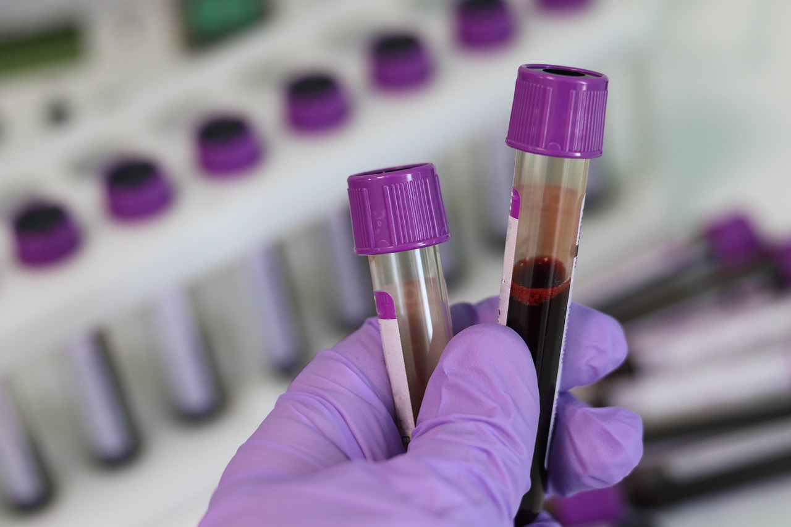
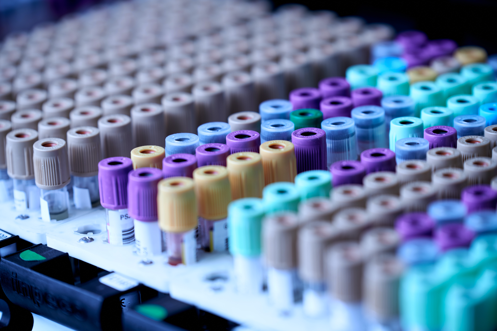

Hello, my name is Brandon
I am currently a Medical Technologist looking to start in the IT field. I have been coding as a hobby for two years focusing on python, Django, SQL, HTML, CSS, and Javascript.
Below are some of my completed projects.

Inventory Tracker was my first attempt to build a web application. Version two is an updated version of this program with more features and an updated look. This version contains ideas I orginally had, but lacked the skill to implement.

Hematology Education provides a hub for all things hematology. The goal of my Hematology Education app is to provide an application that a Technoglogist can reference to improve knowledge in hematology and to use as a reference.
Random recipe generator is a web app that utilizes a webscraper to build a database of recipes. From this database the app will direct the user to a random recipe in the database

Laboratory Test Catolog is a quick and easy way to display pertinent laboratory testing information to the end user. Information such as appropriate tubetype, testing stability, reference ranges etc., is just a click away with my testing catolog.
Laboratory Test Catlog required a large amount of data to be moved from excel to the application. Through the combined use of selenium and gspread, I was able to develop a program that will automatically transfer data from an excel sheet to the website.
Working in a laboratory means keeping track of numerous reagents, pipettes, quality control material, etc. Lighten the burden with Inventory Tracker, a web application designed to allow for simple and efficient tracking of laboratory materials.